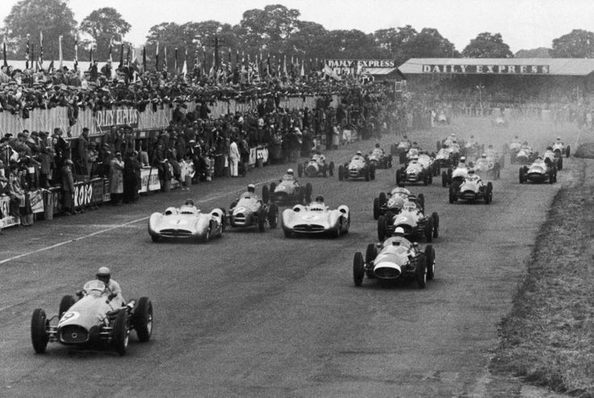

Historia Formula 1
La Fórmula 1 (F1) es la categoría reina del automovilismo y una de las competiciones deportivas más populares del mundo. Desde su creación en 1950, la F1 ha evolucionado constantemente, ofreciendo carreras espectaculares, innovaciones tecnológicas y rivalidades legendarias.
Los Inicios (1950-1960)
La primera temporada oficial de la F1 se celebró en 1950, con el Gran Premio de Gran Bretaña como su carrera inaugural. Giuseppe Farina se coronó como el primer campeón del mundo, pilotando para Alfa Romeo. En esta década, pilotos como Juan Manuel Fangio y Stirling Moss dominaron la competición, estableciendo los cimientos de la categoría.
La Era Dorada (1960-1980)
Durante estos años, la F1 experimentó un crecimiento significativo, con la aparición de grandes equipos como Ferrari, Lotus y McLaren. La seguridad comenzó a ser una preocupación clave debido a los accidentes fatales. Pilotos como Jim Clark, Niki Lauda y Jackie Stewart marcaron la historia con sus hazañas en la pista.

Revolución Tecnológica (1980-2000)
Los avances aerodinámicos y la introducción de motores turbo transformaron la F1. En esta época, Ayrton Senna y Alain Prost protagonizaron una de las rivalidades más icónicas del deporte. La llegada de Michael Schumacher en los años 90 consolidó la supremacía de Ferrari, logrando cinco campeonatos consecutivos entre 2000 y 2004.

La Era Híbrida y la Dominación de Mercedes (2000-presente)
En la década de 2010, la F1 adoptó tecnologías híbridas, con motores más eficientes y sostenibles. Mercedes y Lewis Hamilton dominaron gran parte de la era moderna, estableciendo nuevos récords. En 2021, la competición entre Hamilton y Max Verstappen revitalizó el interés global por el deporte.
El Futuro de la F1
Con un enfoque en la sostenibilidad y la electrificación, la Fórmula 1 sigue evolucionando. Se están implementando nuevas regulaciones para mejorar la competencia y reducir la huella ambiental del deporte. La innovación y la pasión por la velocidad continúan definiendo el futuro de la F1.